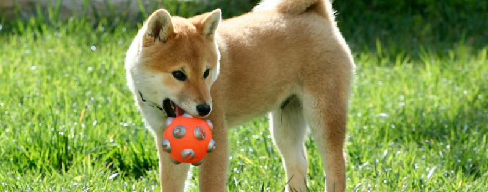

威爾斯柯基犬
我是生於英國威爾斯的可愛狗狗，在威爾斯文中的意思是矮犬。
我和同伴們平均肩高大約25至30公分、體重大約15公斤，原本是培養來放牧牛牛羊羊的，因為矮矮的身高能讓我們避免於被踢到喔！
覺得我可愛請投我一票吧！啾～

柴犬
我是古老的日本犬種之一，身體長約38至41公分，屬於小型狗狗。
在1936年12月16日被指定為日本的天然紀念物，也是現存六種日本狗中唯一的小型狗喔！
根據日本狗保存會，在日本被飼養的日本狗種裡，約有八成是我的同類欸～～快投我～～

邊境牧羊犬
我是生於蘇格蘭和英格蘭邊界一帶的牧羊犬，主要協助農場放牧，是最普遍的柯利牧羊犬犬種喔！
我們以精力旺盛、體格精實且容易學習雜技運動而聞名，在犬類競技與牧羊犬競賽中往往表現亮眼，且被學界認為是最聰明的犬種捏～～看我這麼聰明又厲害就投我吧！

鬆獅犬
我是很～古老的犬種，來自中國華北，有著固執和獨立的個性，所以有時候會難訓練…
但是我有獅子的高貴、熊貓的詼諧、泰迪熊的吸引力、貓的優雅以及狗的忠心和熱情！
而且我濃濃的毛髮可是非常舒服的，投我我就考慮讓你摸摸看唷！

哈士奇
我的名字是對在北方地區用來拉雪橇的一大類狗的通稱，我們因為能夠快速拉雪橇而與其它種類的雪橇犬分開來。 當然我們是最聰明的狗之一，精力充沛、體格健壯，通常有密集的雙層毛，淡藍色的眼睛，而且而且！我們和狼根本是兄弟嘛，不投我就撕裂你喔哼哼！
臘腸犬
我們名字源於德國，又稱為稱達克斯獵犬，是一種短腿，長身的狗狗。我們忠誠、頑皮、活潑好動，而且喜愛追逐小動物和小鳥的嗜好特別有名。不要被我們小巧的外表騙了，我們有很強的跟蹤能力和耐性。如果好好訓練的話，我們可是很強的獵犬喔！快帶我去追小鳥啦～

黃金獵犬
我們是單獵犬，作為獵捕野禽的尋回犬而培養出來的，游泳的續航力極佳，也很活躍，喜歡玩，但也出奇的有耐心，可以靜靜地坐幾個小時不動，主人們都說我們一生都保持了小狗似的特性，活到老學到老的本質不變，天生就是逗人高興的家庭陪伴犬耶～最愛主人了

法國鬥牛犬
我們屬於體型較小的家犬，於西元1800左右於英國被當地蕾絲製造商所繁育。之後於工業革命期間被帶至法國。
我們很熱情、調皮，也因為忠心、可愛的天性讓我們非常適合與人類相伴。但恣意且頑固的個性常常造成訓練及教養上的困擾，但是這次我會聽話的！投我啦～！